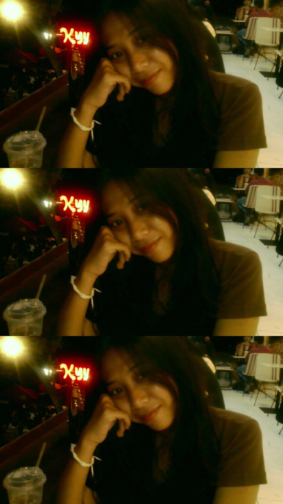

Nama LengkapNI KADEK DWI PUSPITASARI
NIM2413231002
Tanggal Lahir01 Mei 2006
AlamatJl. Oleg No.4, Dauh Yeh Cani, Kec. Abiansemal, Kabupaten Badung, Bali 80352
• TKTK KUNTALA DEWI 1
• SDSD NO 2 ABIANSEMAL DAUH YEH CANI
• SMPSMP N 1 ABIANSEMAL
• SMASMA NEGERI 1 ABIANSEMAL